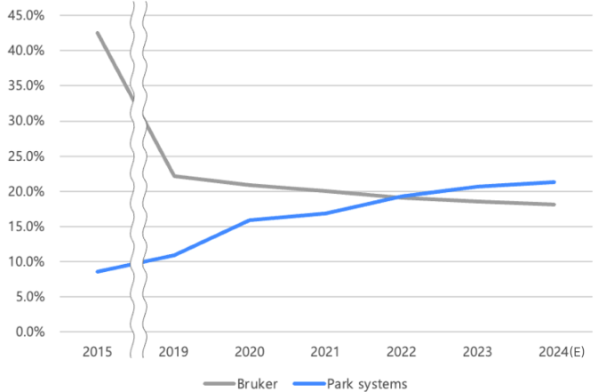
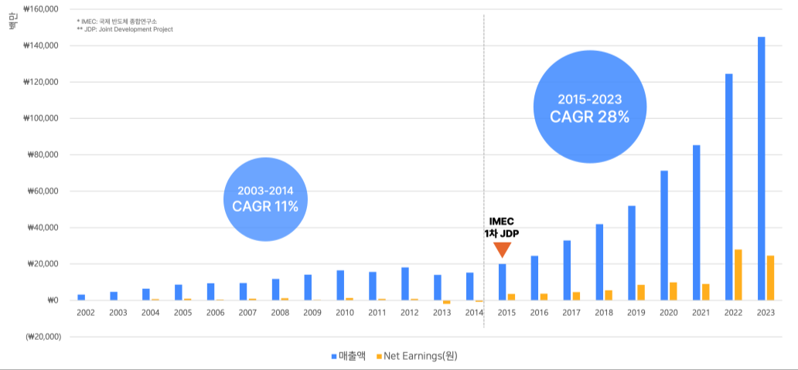
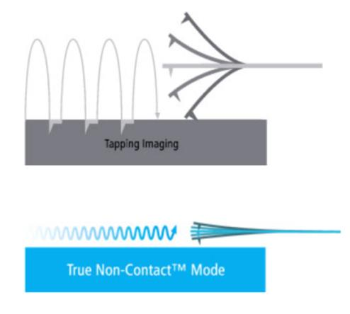
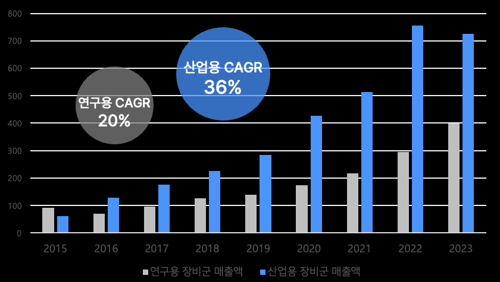

The atomic force microscope (AFM) is the "third-generation microscope" following optical and electron microscopes — a nanoscale metrology technology capable of observing samples at up to tens of millions of times magnification (0.01 nm). In this deep-tech field the Korean venture Park Systems chased down Bruker, the global leader that held more than 40% share in the mid-2010s, and in 2023 took first place in the world market with 20.3%. This case study analyses how Park Systems used its technological advantage to expand into new markets, and draws implications for the growth strategy of deep-tech ventures.
- The aim of this case study is to analyse the innovation factors behind a deep-tech venture's success in global markets, exploring through the case of Park Systems how a technological advantage can be extended into new markets.
- Park Systems achieved product differentiation through core technology innovation, building its position and a foundation for growth in the global AFM market.
- It then grew rapidly by expanding into industrial applications, above all semiconductors, and laid a foundation for sustainable growth by extending into adjacent segments.
- Park Systems' case shows clearly how securing technological capability and a strategic approach to markets contribute to a deep-tech venture's sustainable growth, offering useful strategic insight to other deep-tech ventures.
1. Introduction — deep tech and the purpose of this study
Unlike software-centred high tech, deep tech refers to innovation grounded in physical substance — life sciences, energy, clean technology, materials and chemistry. It is rooted in basic science, and because technical difficulty and uncertainty are high, development takes a long time and a great deal of money. When the R&D succeeds, however, it offers the possibility of leading a market on the strength of an unmatched technological advantage.
The problem is that the greater the technical difficulty, the higher a deep-tech venture's relative chance of failure, and even after securing the technology the major task of commercialisation remains. In high-tech markets many new technology products fail commercially for want of commercialisation (Chiesa, 2011). This study analyses Park Systems, which went beyond Korea to take the world's leading share in atomic force microscopy, and draws implications for the growth strategy and development path of deep-tech ventures.
2. Theoretical background
2.1 Competitive strategy
In Competitive Strategy (1980) Michael Porter set out three generic strategies: differentiation, overall cost leadership and focus. Differentiation secures competitive advantage by raising added value through distinctive product and service characteristics, and requires product engineering, R&D and the recruitment of creative talent. Porter warned that failing to choose clearly among the three risks being "stuck in the middle."
2.2 Beachhead market strategy
In Crossing the Chasm, Geoffrey Moore likened market approach strategy to the Normandy landings: take a secure beachhead first through a single concentrated assault, then advance into the rest of the territory. MIT's Bill Aulet developed this into a practical framework — "select a beachhead market" — recommending that a firm start in a specific market where it can secure dominance quickly and then expand into other segments. The strategy is especially useful for smaller firms with limited resources.
3. The AFM market and Park Systems
Atomic force microscopes began to be commercialised in earnest in the late 1980s, and the market was estimated at about USD 500 million in 2023, with growth of 5.4% a year expected through 2031. AFMs were initially developed mainly as research instruments for biology and materials chemistry, but as their use in processes such as semiconductor manufacturing has grown, the share of industrial instruments has expanded markedly. In 2023 global shares stood at 20.3% for Park Systems in first place, 18.8% for Bruker and 9.1% for Oxford Instruments. Bruker, which had held commanding market power with more than 40% share into the mid-2010s, was overtaken in 2023 under sustained pursuit by Park Systems, then in second place.

Park Systems Corp. is a nano-metrology specialist that develops, produces and sells atomic force microscopes. Its CEO Park Sang-il founded the AFM company PSI in the United States in 1988, sold it successfully to Thermo Spectra in 1997, and in April of that year founded Park Systems (then PSIA) in Korea. The company listed on KOSDAQ in December 2015 and as of 2024 has a market capitalisation of more than KRW 1 trillion. Revenue in 2023 was 36.4 times the 2002 figure, and the compound annual growth rate from 2019 to 2023 exceeded 28%. Notably, from 2015 — when joint research with IMEC, the international semiconductor research institute, began — the compound annual growth rate rose from 11% to 28%, showing that entering the semiconductor market acted as the catalyst for growth.

4. Case analysis
4.1 The starting point of innovation: technological capability
Securing technological competitiveness through R&D investment. CEO Park Sang-il was one of the key figures who led the commercial development of atomic force microscopy during his doctoral studies at Stanford. As a founder from a research background, he has emphasised doing things the hard way, on the philosophy that having the industry's best technology is itself a company's core competitiveness. Park Systems' R&D spending averages 10.8% of revenue, far above the 3.95% average for Korean SMEs. R&D staff make up 34% of the workforce, well above competitor Bruker (about 18%) and the 15.4% average at listed Korean pharmaceutical and bio companies. As of April 2024, 27 of 30 domestic patent applications — 90% — had been registered, a very high figure given that registration rates at many large Korean firms run at 50–60%. Bruker, by contrast, secured many of its most-cited patents through transfers from acquisitions such as Veeco in 2010, whereas Park Systems concentrated on direct R&D centred on its own research institute — a clear difference in approach.
Core technology: cross-talk elimination. One of Park Systems' core technologies is cross-talk elimination, a design that physically separates the x–y scanner from the z scanner so that they move independently. The piezo tube scanner used in most existing products works by flexing a hollow tube, producing cross-talk between the xy plane and the z axis and distorted images. A separated scanner removes background curvature distortion and greatly increases the speed of the z-axis servo response, raising image processing speed roughly four- to fivefold (Kwon, 2003). In 2015 the technology the company had developed itself was designated a national core technology — recognition that it was worth protecting at national level.
Product differentiation. AFM products commercialised in the early 2000s scanned in contact mode or tapping mode, with the probe touching the sample, which caused wear on the probe tip and sometimes damaged soft samples. Park Systems' commercialised True Non-Contact™ technology keeps the probe from touching the sample at all, so there is no probe wear and no trace left on the sample surface. Non-contact mode requires precise z-axis control responsive to minute changes in the distance between probe and sample, which the cross-talk elimination system made possible. On the strength of the reliability of this technology and its product performance, Park Systems grew from a small venture into the world's second-largest AFM supplier by 2015 — a successful implementation of Porter's differentiation strategy.

4.2 Extending the innovation: pre-empting the market and commercialising
Productising industrial AFMs. In 2015 Park Systems held second place globally but under 10% of the total market. Given the importance of brand recognition and sales networks in the research instrument market, competing against the marketing power of a global corporation was extremely difficult. In that situation the industrial instrument market looked like a new opportunity worth exploring. Quantitative measurement in a non-contact mode that leaves the sample surface undamaged is a strong advantage in fine-featured industries where process yield matters, and in the industrial market the ability to meet product performance requirements and customers' particular needs comes first. It was therefore a market where the brand recognition gap with Bruker might be overcome with technology.
Pre-empting the semiconductor market. As extreme ultraviolet (EUV) lithography became essential at 7 nm and below, the need to adopt atomic force microscopes capable of high-resolution metrology grew. In the early 2010s, however, it was extremely difficult for a small Korean venture to win an opportunity to prove its product to cautious large semiconductor firms. Park Systems found its opening through a research partnership: in 2015 it signed a joint development project (JDP) agreement with IMEC, the non-profit international semiconductor research institute in Belgium, developing nanoscale atomic force microscopes and metrology solutions for next-generation semiconductor production processes. The project's success demonstrated that Park Systems' technology met the level the global semiconductor industry requires, and orders followed in succession from semiconductor manufacturers at home and abroad, including the industry's major players such as Micron.
The upshot was that Park Systems effectively pre-empted the semiconductor industrial AFM market, ahead of Bruker, which had entered the semiconductor market earlier but had not secured the major customers. The semiconductor AFM market is a high-growth market expanding at about 30% a year, and in 2022 industrial markets accounted for 66% of Park Systems' total revenue.
Beachhead market strategy. Having entered the semiconductor market, Park Systems moved between 2019 and 2020 from supplying research analysis labs to supplying semiconductor volume production lines. Its first in-line tool, the NX-Wafer, measures wafer roughness and trenches as standard and automatically detects and analyses nanoscale defects that optical equipment cannot find. An automated solution running 24 hours a day, seven days a week, it became the company's main revenue source, accounting for more than half of total revenue in 2022. The company then entered cleaning processes with the NX-MASK, which removes defects on EUV process masks through nano-probe control, and is widening its scope from front-end to back-end processes with hybrid tools combining atomic force microscopy with white light interferometry (WLI). With industrial tools carrying significantly higher margins than research instruments, industrial revenue overtook research revenue in 2016 and its share has kept expanding.

5. Conclusion
Park Systems achieved technological innovation through active investment in R&D and, on the strength of those results, realised product differentiation to establish itself as a major player in the global AFM market. It then analysed its technology and market conditions closely and expanded strategically into industrial instruments, above all semiconductors, using a beachhead market strategy to move successfully into other segments of the same market. As a single case study its generalisability is limited, and the study notes that further analysis is needed of why Bruker achieved relatively little despite attempting to enter the semiconductor market.
- Differentiation grounded in technology is the essential precondition. For a deep-tech venture to secure competitive advantage, sustained R&D investment and strategic market selection are essential, and it is important to establish clearly the points that set it apart from competitors.
- Identify the market where the technology creates the greatest value. Park Systems' AFM technology could maximise its strengths by targeting the semiconductor industry, where ever finer processes are essential.
- Use joint research projects as leverage for market entry. Conducting joint research through collaboration with IMEC allowed the company to understand industry needs before entering the market and to use that as an opportunity to improve the product, reducing the burden of initial entry. In deep-tech markets, where trust in the technology matters, success in the initial market acts as a powerful reference for moving into adjacent segments.
- Expand from the beachhead into adjacent segments. Technological flexibility that applies a core technology across a range of solutions — from metrology to cleaning, from front-end to back-end — becomes the engine of continued growth.